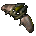
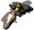
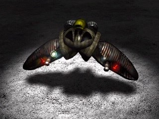

Грифон



Панель информации в игре
- Скорость:
- 1200 км/ч
- Энергия (HP):
- 180
- Обзор:
- 700 м
- Время производства:
- 31 с
| Оружие | Мощь | Дальность | Цели |
|---|---|---|---|
| Штурмовой игломет | 3 | 1-4 | ЗВ |
| CX2 Bomb | 100 | 1-8 | З |
Затраты: Экстракт 1000 Железо 1400 Уголь 1000 Титан 600
Описание
Легкий сверхзвуковой пикирующий штурмовик, разработанный главным образом для уничтожения вражеских колонн бронетехники и зданий. Вооружен кассетными радиовзрываемыми бомбами. Он не предназначен для непосредственного боя с любой бронированной машиной, а при использовании в качестве истребителя практически обречен. Чаще всего действует звеньями вместе с истребителями Гарпия, его естественными защитниками.
Связанное
- Требует
- Завод, Матка
- Производится в
- Завод
- Оружие
- Штурмовой игломет (slot 0), CX2 Bomb (slot 1)
- Улучшается проектом
- Плазменный Акселератор, Биозащитная Система
Параметры конфигурации, которых нет в игре (6)
HUMAN- 2
TURN_SPEED- 0.008
AIUNIT- AIUNIT_BOMBER
SOLDIER_TYPE- SOLDIERTYPE_UNKNOWN
INDEPENDENT- nigdy
TYPE- R_aSAMOLOT